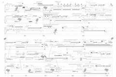

VIEW SCORE:
- 
ABOUT THE WORK:
walkside, lost (2015)
Instrumentation: 3 percussionists, electronics, and video processing
Dedication: For Slagwerk Den Haag
Commission & Awards: Selection, Featured on Score Follower's '#FollowMyScore2019'
Text by: Text by Darcie Dennigan
World Premiere: Gaudeamus Muziekweek, Utrecht, Netherlands - Slagwerk Den Haag, September 13, 2015
Contact: jasontbuchanan[at]gmail.com
PROGRAM NOTES:
walkside, lost and gimme shelter are two works in a cycle of compositions for three percussionists, electronics, and live video processing on texts by American poet Darcie Dennigan written specifically for these commissions, the first for Gaudeamus Muziekweek & Slagwerk Den Haag, the second for Eklekto Percussion Geneva. The pieces both revolve around the structural intersections of precisely notated gestures that influence human performance with software systems that influence behavior of multimedia, the obfuscation or recontextualization of semantic content in speech, and the way in which confusion and ambiguity distort a participant's perception. The systems I have designed for these works serve to generate reservoirs of video and audio in real-time that are recalled, manipulated, and re-composited against themselves during the live performance in various ways throughout the work. Variables for video compositing and audio processing are governed by precise automation of distinct parameters that control the behavior of the system, resulting in visual, aural, and temporal dissonances between multimedia and human performance. To emulate organic, unpredictable behavior, noise is introduced into the system so that these automation values become weighted/biased targets rather than fixed values. Further expansion and development of these software systems will allow the behavior of multimedia elements to be influenced by, and respond to, data parsed directly from the behavior and actions of live performers through the use of sensors, microphones, video data, and motion tracking for enhanced integration between the behavior of the software system and performers to create a dynamic performance environment. These developments will be utilized progressively with each new work in the cycle, a process that will eventually turn back on itself and be retroactively incorporated with each new performance of each work.
- Jason Thorpe Buchanan
walkside, lost: Sidewalks are crucial for protests, commuting, parades, playing, and more, but increasingly in America, sidewalks are absent from urban planning. This piece enacts the absurdity of the current American political discourse on public space– we’re not even evolved enough to be at cross purposes. The best one can say is that we’re at cross-talks.
gimme shelter: It was Halloween when the New York Times showcased their story of a German town and its 102 inhabitants “bracing” for their mandated embrace of 750 asylum seekers. Catastrophe visits the world’s inhabitants unevenly, disproportionately, and then its victims, costumed in their catastrophe, must visit us. gimme shelter evokes three starkly contrasting sociopolitical viewpoints in a text written concurrent with the mass exodus of citizens of poor, war-ravaged, and environmentally unstable countries seeking home elsewhere. No single perspective or line is more important here than the other. Rather, consider the accretion of speech in overlapping entreaties alongside the stagnant drone of statistics and rhetoric. We are not free to listen to one side, to make one account readable, livable– hospitable.
- Darcie Dennigan
Performances of walkside, lost

Gaudeamus Muziekweek
, Utrecht, Netherlands